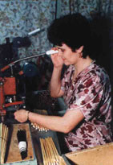

Prev

Next
The handle is then inserted into the ferrule.
The ferrule is crimped to lock the handle in place.
The tuft is then tested and fixed with a solution of gum arabic to protect it (not shown).
The End!
Up